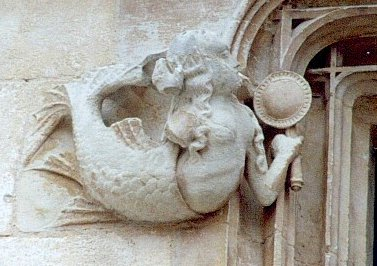
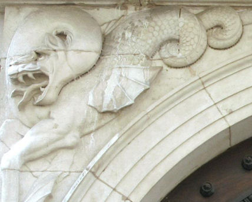
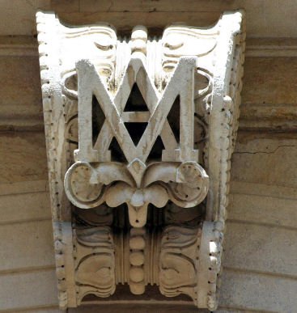
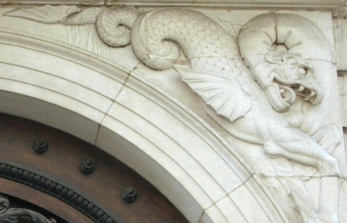
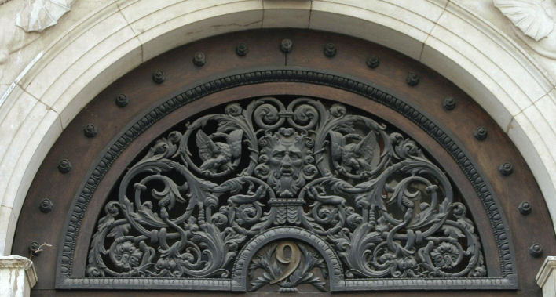
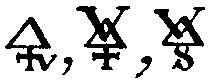
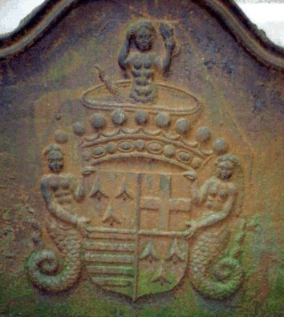

Emblema XXXI.
revu le 8 mai 2002
Rex natans in mari, clamans altâ voce ; Qui me eripiet, ingens praemium habebit.
(Le Roi nageant dans la mer crie d’une voix forte : Qui me sauvera obtiendra une récompense merveilleuse1.)
Accablé par le lourd diadème, le Roi
Nage en la vaste mer, criant d’une voix forte :
Pourquoi ne m’aidez-vous ? Pourquoi n’accourez-vous,
Quand, délivré des eaux, je puis vous rendre heureux ?
Rendez-moi, par votre sagesse, à mon royaume,
Et vous ne craindrez plus souffrance ou pauvreté2.
Savoir nager et reconnaître les lettres, tels étaient, dans l’Antiquité, les premiers éléments de toute instruction. C’est pourquoi on disait habituellement d’un homme inculte et sans éducation : " II ne sait ni nager ni lire. "3 Les Anciens considéraient en effet que la nage pouvait souvent servir à sauver le corps et à l’arracher aux périls de l’eau, et la science, à mettre l’âme à l’abri des flots de la fortune4. Ajoutons que la nage se révélait surtout utile à qui était sous les armes, en temps de guerre, et la connaissance des lettres à qui était chez soi, en temps de paix5. Nous observons que les bêtes ont leurs armes toutes prêtes et fournies par la nature mais que l’homme a reçu, à la place, contre la violence extérieure, ses mains et son esprit inventif à qui il revient d’imaginer et de découvrir ses armes tandis que les bêtes produisent les leurs et en jouissent. Pareillement la faculté de nager est innée aux animaux mais non à l’homme. Les premiers, même tout jeunes, se sauvent de l’eau à la nage, tandis que l’homme, fût-il âgé ou très robuste, y périt asphyxié. Il a donc fallu ordonner aux enfants de s’exercer à la nage, ce qui peut se révéler utile dans toute existence, afin que la pratique de l’art remplaçât ce que la nature n’avait pas donné. Les grands, les princes et les rois ont utilise le même exercice pour la sauvegarde de leur corps. Car ils ne sont pas nés en un lieu différent et entièrement libres des hasards de la fortune, mais ils y sont exposés tout comme les autres hommes. Si Denys n’avait pas su nager et lire lorsqu’il fut chassé du royaume de Sicile dont il était le tyran, il aurait péri dans les flots de la mer quand il fit naufrage dans le golfe de Corinthe. Mais s’étant soustrait au péril en nageant, il se rendit à Corinthe où il ouvrit une école pour les enfants et y enseigna les belles-lettres ; devenu maître d’école, de roi qu’il était, il tint la férule à la place du sceptre, d’où le dicton : " Denys à Corinthe. "6
De même, si le fils royal des philosophes ne savait pas nager, nul n’entendrait ses cris et ne lui porterait assistance alors qu’il serait déjà submergé par les eaux. La nage est donc nécessaire et utile à l’homme de toute condition. Certes, elle ne délivre pas sur-le-champ l’homme des flots de l’immense mer, mais elle lui procure un délai qui lui permet d’être délivré par d’autres. Le roi dont nous parlons se maintient très longtemps ; il ne cesse alors de crier, bien que peu de gens l’entendent et le voient, car la mer est vaste et il est loin, au large. Par chance en effet il atteint en nageant un rocher ou une très grande pierre à quoi il se retient si les flots deviennent trop forts. Veut-on savoir ce qu’est cette mer ? Je réponds qu’il s’agit de la mer Erythrée ou mer Rouge, située sous le Tropique du Cancer7. Le fond de cette mer contient en abondance des pierres magnétiques ; aussi la traversée en est-elle dangereuse pour les navires dont la charpente est consolidée à l’aide de fer, ou qui sont chargés de ce métal, car ils pourraient facilement être entraînés au fond par le pouvoir de l’aimant. Le roi déjà cité ignorait cela. Son navire a donc sombré et tous les passagers ont péri. Il s’est échappé seul à la nage. Il lui est resté sa couronne où luisent d’admirables rubis8. Grâce à elle, il peut être aisément reconnu et ramené dans son royaume. Et quels sont les biens que ce fils de roi peut et désire remettre à celui qui le ramènera dans son royaume ? Ils ne ressemblent en rien, certes, à ceux que Ptolémée, dernier roi d’Egypte, réserva à Pompée par qui son père avait été rétabli sur son trône : ce ne sont pas la trahison et la mort, mais la santé, la guérison des maladies, la préservation du mal, l’usage des choses nécessaires, la corne d’abondance, l’honneur et l’amour. Ce ne sont pas là des biens médiocres et vulgaires, mais les plus précieux auxiliaires et les plus beaux ornements de cette vie : qui donc, s’il n’est de plomb, ne chercherait à se les procurer ? qui ne nagerait au secours de ce naufragé ? qui ne lui prêterait main-forte pour le faire monter dans une barque ? Mais il faut prendre soin, pendant qu’on l’assiste, que son diadème ne tombe pas dans la mer. Dans ce cas en effet on aurait peine à reconnaître en lui le roi et ses sujets ne l’accueilleraient pas; car le pyrope vénéré de tous aurait péri, la pierre Bezoar9 qui promet à tous la santé se serait évanouie. C’est pourquoi le Jardinier (Rosarius) cite Aristote en ces termes :
" Choisis-toi comme pierre celle par laquelle les rois sont vénérés dans leurs diadèmes et par laquelle les médecins ont le pouvoir de guérir leurs malades, car elle est proche du feu. "
En effet, sans vertu médicinale la couronne serait de nulle valeur. Et que doit-on dire au roi une fois qu’il a été délivré ? Il faut le libérer des eaux qu’il a bues par des sudorifiques, du froid par la chaleur du feu, de la torpeur de ses membres par des bains modérément chauds, de la faim et du jeûne en lui administrant un régime convenable, des maux extérieurs enfin au moyen des remèdes salutaires qui leur sont opposés. Ensuite il faudra pourvoir aux noces royales ; de celles-ci naîtra en son temps un enfant très désiré, plein de grâces aux yeux de tous, rempli de beauté et très fécond, qui surpassera tous ses aïeux par sa puissance, ses royaumes, son opulence, ses peuples, ses richesses ; il soumettra ses ennemis, non par la guerre, mais par son humanité, non par la tyrannie, mais par la clémence qui lui est propre et naturelle10.
Notes1. Ce chapitre traite du BasileuV de l'oeuvre [le petit roi, autrement appelé le petit baigneur par Fulcanelli, dans son allégorie de la galette des rois ; encore appelé chabot, petit poisson, etc.]. L'emblème montre un roi, qui a l"apparence forte et puissante, couronné d'un diadème et qui flotte dans une eau écumeuse. Au loin, un port où un bâteau est amarré [est-ce le navire Argo ? C'est le signe que la terre promise, en tout cas, est atteinte]. L'allégorie est claire. Il faut sauver le Roi de l'eau, c'est-à-dire coaguler l'Eau mercurielle.

FIGURE I
(Hôtel Lallemant, cour intérieure, Bourges - la sirène. Cliché Alain Mauranne)La sirène au miroir est le signe de la coagulation de l'eau mercurielle.
2. L'idée de l'épigramme est qu'à un certain moment, l'Eau permanente, fluide comme de l'eau, va peu à peu s'épaissir du fait, conjoint, de la conjonction radicale [mais progressivement obtenue] des Soufres et de l'évaporation insensible de cette eau benoîte. Autrement dit, à un instant de la Grande Coction, la « liqueur mercurielle » va se trouver dans un état de sursaturation, qui va déclencher sa progressive coagulation et l'apparition tant désirée de l'île du Cosmopolite, ou de Délos si l'on veut. Ce chapitre a trait, par conséquent, à la coagulation, matière traitée par maints auteurs [Atalanta, XXX] et surtout par Ripley qui n'a pas laissé une partie de l'oeuvre inexplorée. Notez qu'E. Canseliet, dans ses derniers livres [l'Alchimie expliquée sur ses Textes classiques et les Deux Logis Alchimiques] semble - à première apparence - faire l'impasse sur le sujet.
3. calembour spirituel : quelqu'un qui sait lire a forcément de l'esprit...
4. Le corps se réfère au squelette de la Pierre [symbolisé par la salamandre, Atalanta, XXIX, Fontenay]. L'âme, au principe de la teinture. Maier semble dire qu'il suffit au Corps de savoir nager pour éviter la destruction, mais que l'Âme requiert un artifice spécial, du ressort de l'Art...On se sortira d'embarras en considérant que si le Corps correspond au sel incombustible des sages, l'Âme, en revanche, requiert les soins de l'Artiste [on comprend pourquoi E. Canseliet préconise de préparer au Soufre un lit de plumes bien douillé, cf. Alchimie expliquée sur ses textes, etc.]
5. Temps de guerre et temps de paix, voila qui évoque Janus au double visage. Voyons cela : la nage serait utile en temps de guerre et la connaissance des lettres [autrement dit l'étude], en temps de paix. Voici ce que l'on peut dire de Janus : il possède un double visage parce qu'il exerce son pouvoir sur le ciel, sur la mer comme sur la terre ; il est aussi ancien que le monde; tout s'ouvre ou se ferme à sa volonté. Lui seul gouverne la vaste étendue de l'univers. Il préside aux portes du ciel, et les garde de concert avec les Heures. Il observe en même temps l'Orient et l'Occident. On le représente tenant d'une main une clé, et de l'autre une verge, pour marquer qu'il est le gardien des portes (Januae) et qu'il préside aux chemins. Ses statues marquent souvent de la main droite le nombre de trois cents, et de la gauche celui de soixante-cinq, pour exprimer la mesure de l'année. Il était invoqué le premier lorsqu'on faisait un sacrifice à quelque autre dieu. Ajoutons que Janus a comme caractère spécifique l'ambiguité ; que de ce fait, Janus désigne un corps à deux têtes [du latin anceps, qui a deux têtes]. Comment nommer mieux l'androgyne hermétique, ou homme double igné de Basile Valentin ? Janus est évoqué par Pernety qui en dit :« Saturne se retira en Italie dans le pays Latium, où régnait Janus, qui le reçut très humainement. Ils régnèrent conjointement, et procurèrent à leurs Sujets toutes sortes de biens. » [Fables, livre III].
et dans son Dictionnaire :
Janus. A deux visages, signifie selon les Alchymistes, la matière de la pierre philosophale, qu’ils nomment Rebis, comme faite et composée de deux choses. Ils font régner ce Janus avec Saturne, parce que cette matière, mise dans le vase, prend d’abord la couleur noire attribuée à Saturne. Voyez une explication plus étendue de Janus et de ses attributs dans le liv. 3, ch. 3 et suiv. des Fables Egypt. et Grecques dévoilées.Nous sommes bien d'accord avec Pernety sur le Rebis, ainsi que sur l'allégorie où Janus s'accorde avec Saturne, premier régime de la Grande coction. Dans ses Fables, Pernety nous en dit davantage sur Janus, en liaison avec le siècle d'or mythique qu'il y aurait eu sous son règne [ce qui se rapproche d'ailleurs du titre du traité d'Huginus à Barma, encore appelé le Règne de Saturne changé en siècle d'or].N’est-il pas surprenant qu’un tel paradoxe n’ait pas fait ouvrir les yeux aux Anciens, & que tous soient convenus d’attribuer un âge d’or au règne de Saturne ? M. l’Abbé Banier le donne à celui de Janus, qui régna conjointement avec Saturne. « Ce Prince, dit ce Mythologue (Loc. cit.), adoucit la férocité de leurs mœurs, les rassembla dans les villes & dans les villages, leur donna des lois, & sous son règne, ses sujets jouirent d’un bonheur qu’ils ne connaissaient pas : ce qui fit regarder le temps où il avait régné comme un temps heureux, & un siècle d’or. » [Fables, chap. III]Ce siècle d'or est l'allégorie du passage du régime de Saturne à celui de Jupiter où le Chaos disparaît et où la coction devient régulière. Dans ce second extrait, Pernety nous explique en quoi la noirceur est liée à Janus :La noirceur est une suite de la dissolution ; la dissolution est la clef & la porte de l’œuvre. Elle ne peut se faire que par la guerre qui s’élève entre le fixe & le volatil, & par les combats qui se donnent entre eux. Janus étant cette porte, il était tout naturel qu’on ouvrît celle du Temple qui lui était consacré, pour annoncer une guerre déclarée.Pour d'autres notes sur Janus, voyez : 1, 2, 3, 4, 5.

figure II, A
figure II, B
figure II, C

figure II, DFIGURE II
(portail, sis 9 rue Moncey, Besançon : Janus - montage de deux clichés d'Alain Mauranne)La Figure II est un montage obtenu à partir d'un portail, situé rue Moncey à Besançon, qui permet de faire voir les rapports que contractent Janus et Saturne. Les figures II A et II C montrent les deux faces de Janus. Comme on le voit, il s'agit des éléments du Rebis, réduits à des monstres hideux, en cette époque où la dissolution est en cours et où le Mercure triomphe par sa ponticité. Nous sommes ici à peu près dans le signe du Cancer. Les ailes que l'on devine à ces Soufres, leur queue en forme de serpent annoncent l'évolution prochaine vers l'état de serpents purs, placés sous le joug du caducée des Gémeaux. La figure II B est essentielle : on y trouve le hiéroglyphe du Soufre vif, c'est-à-dire du Soufre mis à nu, ouvert, qualifiant le métal réduit à l'état de chaux.

On voit bien que le V et le D entrelacé forment bien le signe que l'on aperçoit à la figure II B, quand bien même le commun n'y voient qu'un A et un M entrelacé. Cela, d'ailleurs, conviendrait même : car le A est le signe du Soufre et le M, à en croire Mathurin Eyquem, sieur du Martineau [le Pilote de l'Onde Vive ou le Secret du flux et Reflux de la Mer, Jean d'Houry, Paris, 1678] :
« Cette figure qui est tout au bas, où est écrit Orient, c’est le caractère du Bélier : L - Celle qui suit le côté où est écrit Septentrion, s’appelle Taureau : M »
Or, en grec, L s'écrit L et M, M. En ce cas, les lettres entrelacées forment l'hiéroglyphe du nitre vitriolé, puisque L renvoie à Arès et M à Aphrodite. Ainsi, dans une hypothèse comme dans l'autre, nous sommes renvoyés à l'eau permanente. Mais tout cela serait incomplet sans la figure de Saturne. C'est elle qui fait l'objet de II, D. Ou, à tout le moins, est-ce la figure de Zeus Cronide que l'on aperçoit, au centre de marisques multiples, évoquant un bouillonnement et des figures de convection.
6. pour signifier des plaisirs calmes et sereins. C'est signe que la noirceur est passée ou que les Argonautes ont franchi les roches cyanées. Les alchimistes ont rapproché Osiris et Bacchus de Denys et ont dit qu'il s'agissait du symbole de l'apparition d'une terre. On peut y voir, là encore, l'apparition de la blancheur, sous l'allégorie de Denys qui fait naufrage dans le golfe de Corinthe et qui survit, parce quil sait nager. Sur Corinthe, voir 1, 2, 3, 4. Les vases corinthiens, souvent imités, se retrouvent aux quatre coins du monde antique [Crimée, Égypte, Étrurie, Gaule]. Les vases contiennent des parfums réputés. Corinthe est la cité de la mode. Les vases corinthiens sont parmi les plus colorés, Corinthe passe d'ailleurs pour avoir vu naître la peinture. On peut encore trouver un rapport entre Corinthe et l'Art sacré par le biais de l'Hydre de Lerne, l'un des Douze Travaux d'Hercule. C'est à Corinthe que l'iconographie canonique de la scène se développe complètement vers la fin du VIIIe siècle. La scène du combat contre l'Hydre de Lerne apparaît plus d'une douzaine de fois sur des vases corinthiens à partir de la fin du VIIe siècle et durant le VIe siècle av. J.-C.
Héraklès et Iolaos combattent le monstre, alors que la déesse Athéna se tient à l'écart, auprès d'un char. Sur plusieurs vases, elle tient une petite oenochoé sans doute destinée à recevoir le sang empoisonné de l'Hydre avec lequel Héraklès enduit la pointe de ses flèches. Sur ce point précis, consultez le site suivant : [http://www.multimania.com/zambares/heros/hydre3.htm]. Sur le symbolisme à attacher à l'Hydre, voyez Fontenay. L'hydre de Lerne, né de Typhon et d'Echidna avait un corps de chien et neuf têtes (d'autres disent trois ou cinquante). C'est à l'Artiste d'élire celle qui est immortelle, c'est-à-dire de la trancher à cette matière répugnante pour s'en servir comme Soufre dans l'oeuvre [voir Philosophia Reformata, Mylius].7. Il s'agit d'une indication sur la coagulation de l'Eau mercurielle. Nicolas Flamel nous dit :
« Ce vaisseau de terre, en forme d’écritoire dans une niche, est appelé, dit il, le triple vaisseau ; car dans son milieu il y a un étage, sur lequel il y a une écuelle pleine de cendres tièdes, dans lesquelles est posé l’œuf Philosophique, qui est un matras de verre, que tu vois peint en forme d’écritoire, & qui est plein de confection de l’art, c’est-à-dire, de l’écume de la mer Rouge & de la graisse du vent mercuriel. » [Fig. Hiér.]
Le triple vaisseau contient l'Esprit, le Corps et l'Âme. Les cendres tièdes sont les éléments du Mercure [préparation de l'alkali fixe] ; sur l'oeuf philosophique, voyez Atalanta VIII. Le matras de verre est le vaisseau de nature dont la forme rappelle effectivement celle du verre, si ce n'est sa substance. Au vrai, ce verre tient du sel de foudre, qui est l'écume du verre qui surnage pendant la fusion [sel de verre, fiel de verre, suin] L'écritoire est un renvoi sur l'atrament. La graisse du vent mercuriel est le Soufre rouge ; l'écume de la mer rouge peut se rapporter au Soufre blanc. Pernety en dit que :
« [C'est la] Matiere des Philosophes préparée pour l’œuvre, ou minière de leur mercure. Flamel est le premier qui ait donné ce nom à cette minière. » [Fables]
Selon Diodore de Sicile et Strabon, la topaze [topazoV] venait d'une île de la mer Rouge nommée Ophiode, c'est-à-dire serpentine. On sait que la serpentine est une pierre verte ; mais le nom hébreu de pitedah que tous les interprètes ont rendu par topaze, se rattache au mot pita, qui en sanscrit signifie jaune. Voilà une autre indication sur la nature possible du Soufre rouge. Fulcanelli, dans les Demeures Philosophales, assure que :
« C'est là notre précieux soufre [...] notre dauphin, poisson symbolique autrement appelé échénéis, rémora ou pilote, Persée ou poisson de la mer rouge, etc. » [DM, II, p. 36]

FIGURE III
(Hôtel Jacques-Coeur, cour intérieure, Bourges : Basileus - cliché Alain Mauranne)La figure III montre le métamorphisme en cours, qui, du serpent fera une sirène, avant qu'elle ne devienne l'escarboucle des Sages. La couleur rouille [roia, la grenade] montre l'origine du Soufre rouge ; le diadème constitue la troisième couronne de perfection ; enfin, le petit roi émerge de la fontaine d'eau mercurielle, en haut.
Mais ce poisson est plus que le Soufre rouge, le mot dauphin l'annonçant. C'est en fait le roitelet et le BasileuV de l'oeuvre. Il est aussi appelé poisson pilote ou rémora car il ne s'agit que de la forme prise par la coagulation de l'eau mercurielle, laquelle, comme l'a écrit Flamel, procède de l'écume de la mer rouge et de la graisse du vent mercuriel. Basile Valentin professe la même théorie dans ses Douze Clefs de Philoosphie :« Or celui qui sera curieux de savoir ce que c'est que toute choses dans toutes choses, qu'il fasse à la terre de grande ailes, et la rencogne et la presse tellement qu'elle monte en haut et vole par dessus toutes les montagnes, jusqu'au firmament, alors qu'il lui coupe les ailes à force de fer, ainsi qu'elle tombe dans la mer rouge et s'y noie, puis fasse calmer la mer, et dessèche ses eaux par feu, et par air, afin que la terre renaisse [...] » [Premier Livre de la clavicule de la Pierre précieuse des anciens philosophes, in Douze Clefs]
Basile nous donne, par la même occasion, les séquences en découpage colorée : la terre au départ est noire ; en montant dans le ciel firmamental [expression de Philalèthe], elle blanchit peu à peu. Le volatil l'emporte alors jusqu'à ce que le fixe, par le biais du Soufre, l'emporte. L'empâtement réalisé se nomme la mer rouge et l'allégorie se confond avec celle décrite par Maier dans cet emblème. Notez que Pernety estime, dans des articles de son Dictionnaire sur l'EAU, que les alchimistes extraient leur Mercure de la mer rouge, mais il semble que cette mer rouge n'apparaisse que plus tardivement dans l'oeuvre, à une époque où le Mercure est déjà en action.
Le Tropique du Cancer donne ici le signe sous lequel l'opération de la « levée du Soufre » doit être réalisée. C'est en effet le lieu d'exaltation de Jupiter [nous parlions plus haut de Janus] et le lieu de chute de Mars.
8. Maier donne-t-il là une indication charitable ? Mais qui irait se soucier de rubis ? Sur le fer, voyez Atalanta, XX. Sur l'aimant, voyez Matière. Cet aimant, par les pierres magnétiques, arrête les navires et les détruit. L'allégorie à tirer de cette légende est celle-ci :« La dispersion des membres du corps d’Osiris, est la volatilisation de l’or Philosophique, la réunion de ces membres indique la fixation. Elle se fait par les soins d’Isis, ou la Terre, qui, comme un aimant, disent les Philosophes, attire à elles les parties volatilisées » [Fables]
L'aimant semble être le Corps de la Pierre [Soufre blanc] où va peu à peu s'accréter l'autre nature métallique [le principe de teinture]. On voit que le sens de l'aimant varie selon l'époque de l'oeuvre [l'aimant est assimilé au Mercure, dans la phase de dissolution, et au Corps dans la phase de coagulation].
9. Le terme bézoard dérive de l’arabe « gadzehr » ou du persan « padzahr », signifiant contrepoison ou antidote [alexipharmacon]. En effet, pendant des siècles les bézoards ont été considérés comme un remède précieux et un antipoison lorsqu’ils provenaient de la caillette de la chèvre sauvage, de la gazelle, du porc ou d’autres animaux. Ils étaient hautement appréciés pour leur pouvoirs magiques et ont diversement été utilisé comme médicaments. Le bézoard végétal, fossile ou minéral était utilisé dès le douzième siècle aux Indes comme baume rajeunissant, contrepoison au venin des serpents et des poissons, traitement des vertiges, de l’épilepsie, la dépression et même la peste. On nomme bézoard une concrétion formée de poils ou de divers débris végétaux se formant dans le corps de certains animaux (ruminants) et parfois de l'homme (psychopathes avalant des matières non digestibles). Le bézoard était autrefois considéré (notamment en Orient) comme un puissant antidote. Nous retiendrons qu'il s'agit de concrétions pierreuses cristallisées.
10. la fin du chapitre est un peu prolixe. Il faut en retenir que le Roi couronné n'est pas encore la Pierre et qu'il s'agit d'un symbole qui se rapporte à l'apparition du Soufre rouge sur le Corps de la Pierre.